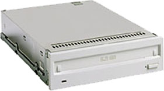

Operating Documentation
Direction 5114043-800, Rev# 9
LightSpeed 3.X Service Methods (Advanced)
Operating Documentation |
MOD drives are a combination of magnetic (magneto) and laser (optical) technologies. They are used to record data on read/write removable disks. High performance with reading speeds up to 4.6MB/sec can be realized. The MOD drive is a 5.25" half height format drive without an external enclosure, as shown in Illustration 1.
Illustration 1: Sony SMO-F551-SD MODs

Each removable MOD disk holds all of the image data. This versatile format allows desktop users to read and write data files, just like a high capacity hard disk, with the major added benefit of keeping a separate disk for each project or client.
Key system benefits include:
user's files can be more easily organized
unlimited capacity - add another disk when one gets full
disks can be used easily for reliable archive back-ups
transfer large amounts of data is simple & reliable
secure sites can easily lock up their data at night
The drive also support a “write-once” format disk providing the ultimate in data security - once data is written, it cannot be altered.
Since the disks are read and written with a non-contact optical head, there is never a head crash like hard disk drives. The disks are made of high strength poly carbonate plastic, the same material as “bullet-proof” glass. The data layer is kept safe between a sandwich of poly carbonate. Also the disks are rated for more than 50 year data storage life, far longer than hard disks and magnetic tape.
A MOD disk isn't affected by stray magnetic fields because data is written with a combination of laser and magnetic power - without this combination, data cannot be altered.
Sony optical disks and drives comply with the International Standards Organization (ISO) standards. Compliance with these standards assures that any ISO disk can be used with anyone's ISO drive. This feature:
Eliminates reliance on single source suppliers
Guards against premature obsolescence
Enables users to exchange data and disks with greatest confidence of compatibility
The Sony SMO-F551-SD (shown in Illustration 1) is compatible with the following 5 1/4” (130 mm) Magneto Optical Disks:
Table 1: Sony MOD (SMO-F551-SD) compatible media
| Compatibility | Type | Description | ISO Standard | ||
|---|---|---|---|---|---|
| Read | Write | ||||
| 8x R/W | 5.2GB | 2048 bytes/sector | ISO/IEC 15286 | ||
| 8x R/W | 4.8GB | 1024 bytes/sector | |||
| 8x R/W | 4.1GB | 512 bytes/sector | |||
| 8x WO | 5.2GB | 2048 bytes/sector | |||
| 8x WO | 4.8GB | 1024 bytes/sector | |||
| 8x WO | 4.1GB | 512 bytes/sector | |||
| 4x R/W | 2.6GB | 1024 bytes/sector | ISO/IEC 14517 | ||
| 4x R/W | 2.3GB | 512 bytes/sector | |||
| 4x WO | 2.6GB | 1024 bytes/sector | |||
| 4x WO | 2.3GB | 512 bytes/sector | |||
| 4x DOW | 2.6GB | 1024 bytes/sector | |||
| 4x DOW | 2.3GB | 512 bytes/sector | |||
| 2x R/W | 1.3GB | 1024 bytes/sector | ISO/IEC 13549 | ||
| 2x R/W | 1.2GB | 512 bytes/sector | |||
| 2x WO | 1.3GB | 1024 bytes/sector | |||
| 2x WO | 1.2GB | 512 bytes/sector | |||
| 1x R/W | 650MB | 1024 bytes/sector | ISO/IEC 10089 | ||
| 1x R/W | 594MB | 512 bytes/sector | |||
| 1x WO | 650MB | 1024 bytes/sector | ISO/IEC 11560 | ||
| 1x WO | 594MB | 512 bytes/sector | |||
| W/R : Rewritable, WO : Write-Once, DOW : Direct Overwrite | |||||
Because the data on an MOD is well protected under the disk's near-indestructible poly carbonate surface, it isn't affected by contamination, except for a periodic head cleaning every few years.